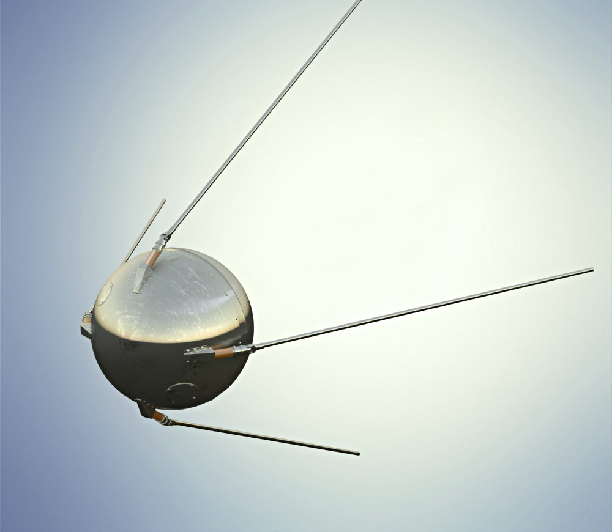

October 4, 1957 - Sputnik 1 was the first artificial satellite to go around the Earth. It was made by the Soviet Union and was launched at Baikonur Cosmodrome. This satellite did 1,440 orbits and went down into Earth's atmosphere on 4 January 1958. The United States was very surprised when the Soviet Union sent Sputnik 1 into space. This was when the Space Race between the Soviet Union and the United States began. The launch was the beginning of a new era of political, military, technological, and scientific developments.
- Launch mass - 83.6 kg (184 lb)
- Dimensions - 58 cm (23 in) diameter
